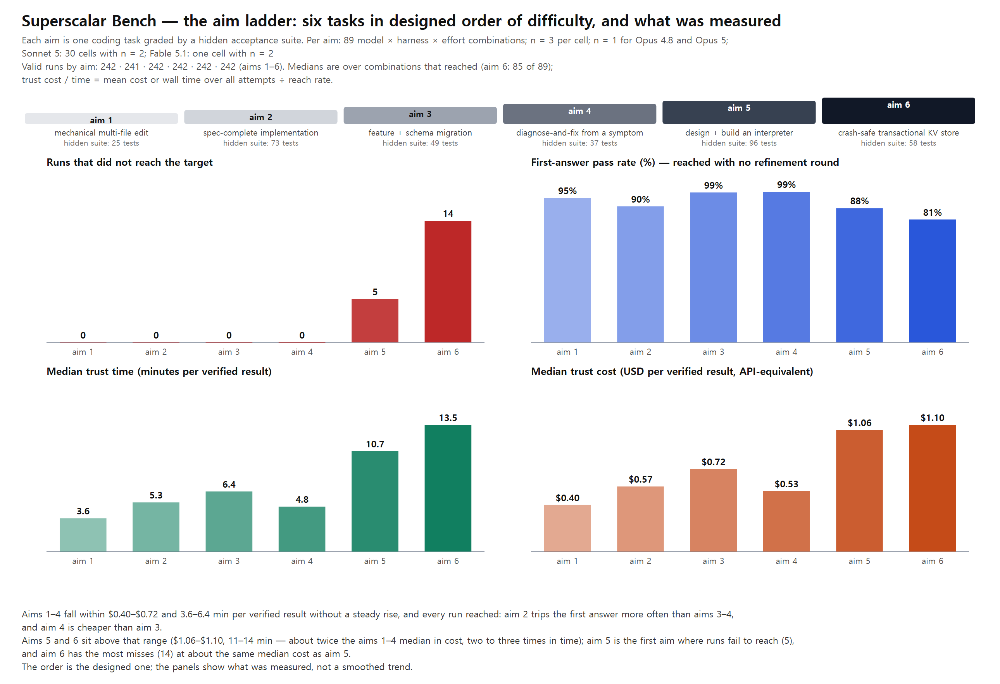
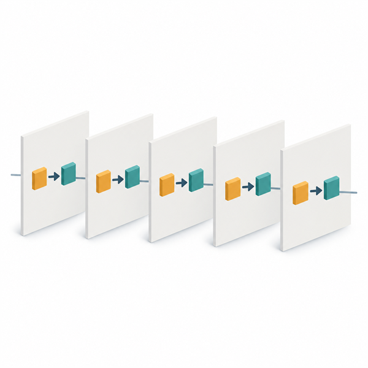
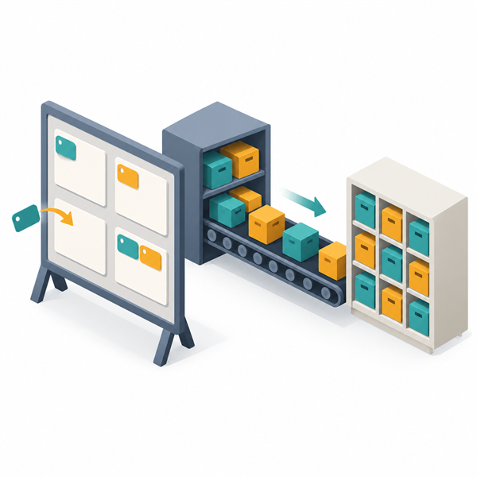
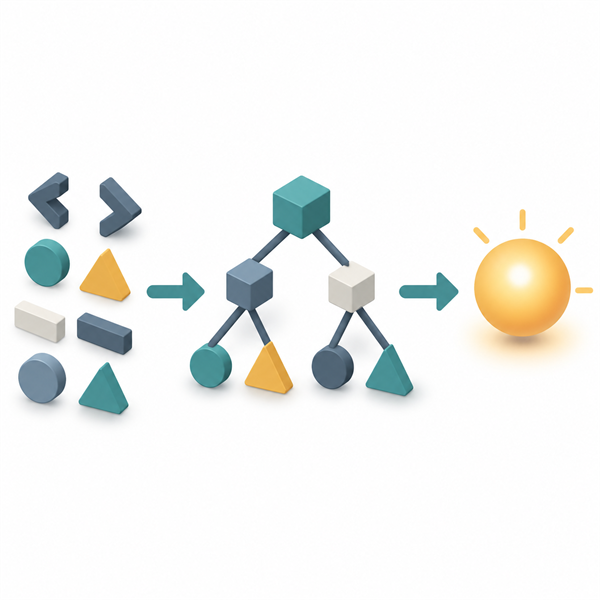
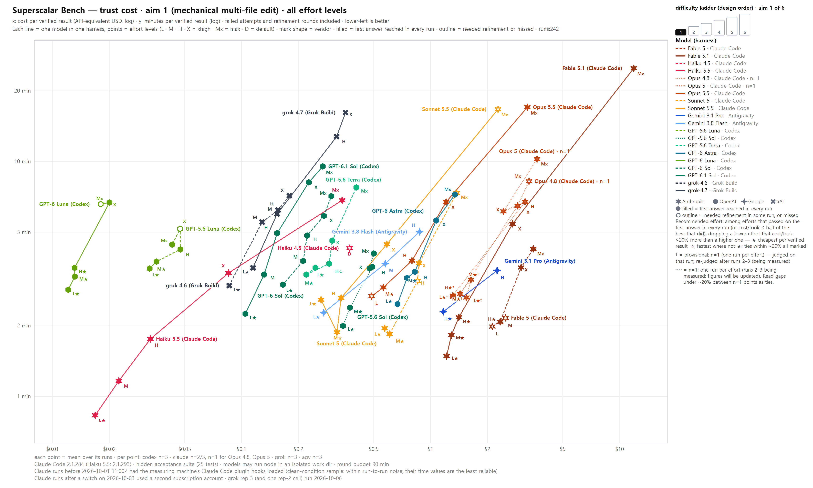
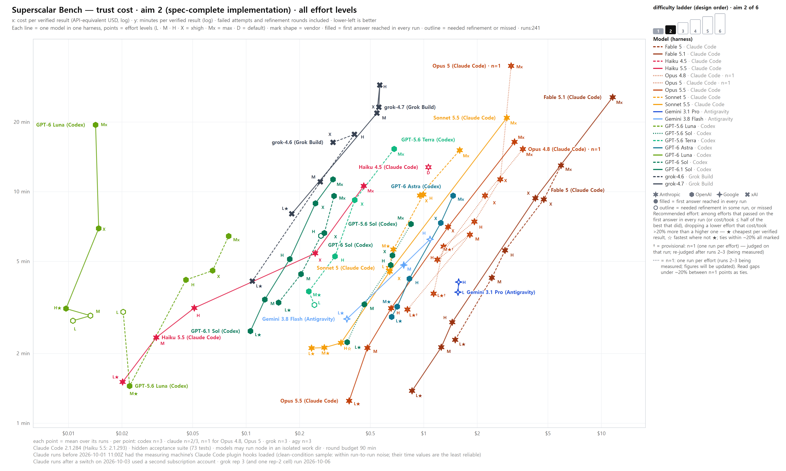
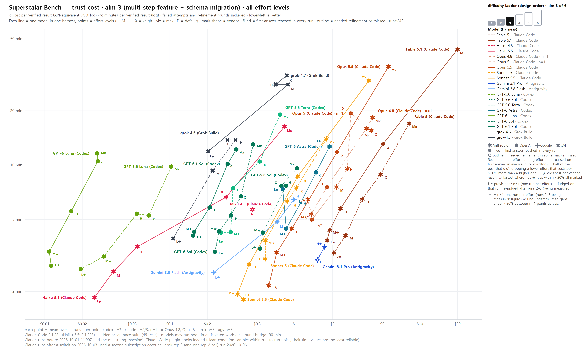
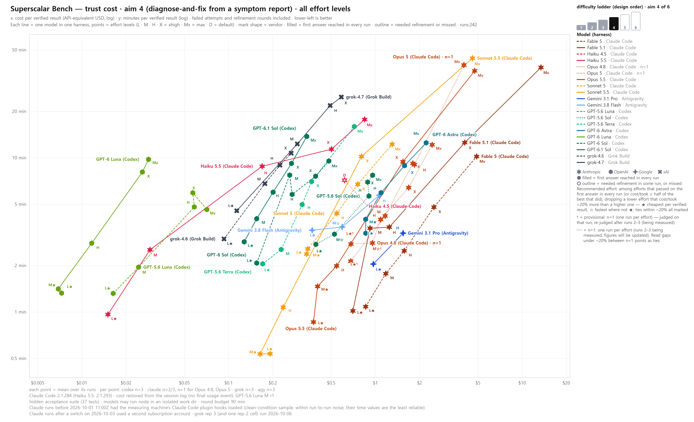
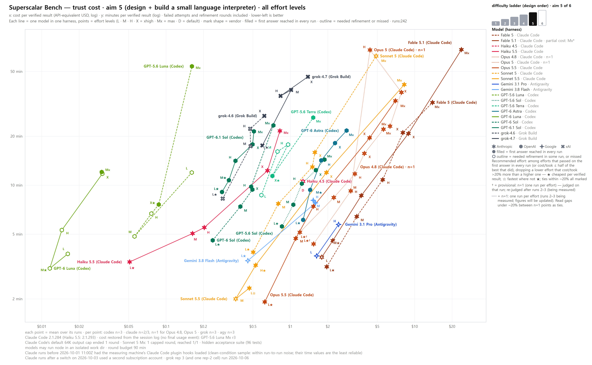
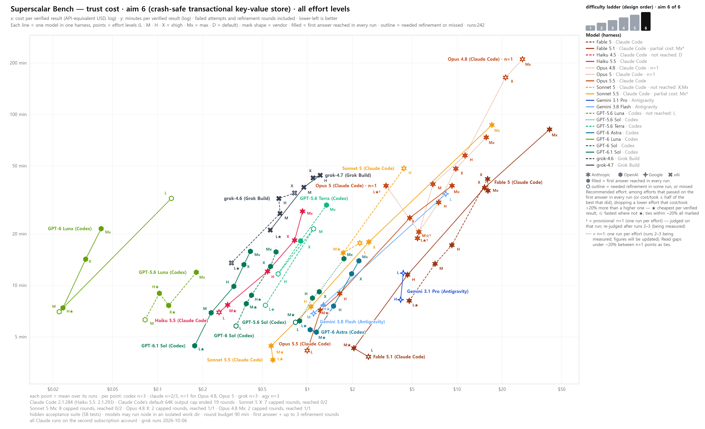

Superscalar Bench
Full report (AI-readable): SuperscalarBench.md →
What one verified coding result costs, in money and minutes — per model × harness × effort, on a ladder of six tasks graded by hidden acceptance suites.
The rows for Opus 4.8 and Opus 5 are n=1 so far (one run per task × effort). Runs 2–3 are being measured and the figures will be updated. Their rankings are mostly reliable, but read gaps under ~20% as ties.
The six aims
Key images: one wordless picture per aim, generated with Codex CLI's built-in image tool from published prompts (how they were made). The text, numbers and ladder on the sheet are drawn by code.
The aim ladder
Each aim is one task; within an aim every model is judged by the same hidden suite. The aims form a ladder ordered by task scope, designed to get harder as it climbs — the panels show what was measured, not a smoothed trend.

| aim | task | hidden tests | reach | first answer | median trust time | median trust cost | |
|---|---|---|---|---|---|---|---|
 | 1 | mechanical multi-file edit | 25 | 100% | 95% | 3.6 min | $0.40 |
| 2 | spec-complete implementation | 73 | 100% | 90% | 5.3 min | $0.57 | |
 | 3 | multi-step feature + schema migration | 49 | 100% | 99% | 6.4 min | $0.72 |
| 4 | diagnose-and-fix from a symptom report | 37 | 100% | 99% | 4.8 min | $0.53 | |
 | 5 | design + build a small language interpreter | 96 | 98% | 88% | 10.7 min | $1.06 |
| 6 | crash-safe transactional key-value store | 58 | 94% | 81% | 13.5 min | $1.10 |
Medians are over the 89 model × harness × effort combinations of each aim (n = 3 per cell; n = 1 for Opus 4.8 and Opus 5; Sonnet 5: 30 cells with n = 2; Fable 5.1: one cell with n = 2). A combination that never reached on an aim has no trust cost and is left out of that aim's trust medians — this happens only on aim 6.
Aims 1–4 fall within $0.40–$0.72 and 3.6–6.4 min per verified result without a steady rise: aim 2 trips the first answer more often than aims 3–4, and aim 4 is cheaper than aim 3. Aims 5 and 6 sit above that range — about twice the aims 1–4 median in cost, and two to nearly three times in time. They cost about the same at the median, but aim 6 takes longer and misses more; aims 5 and 6 are the only rungs where runs fail to reach.
What is measured
Trust cost
Mean cost (or wall time) over all attempts — refinement rounds included — divided by the reach rate. A model that is cheap per attempt but rarely reaches pays for its misses here. A combination that never reached has no trust cost.
- Unit: model × harness × effort — the same model behaves differently under different harnesses.
- Reach: the hidden acceptance suite passes completely; no partial credit. First answer = reached with no refinement round.
- The first answer, then up to three refinement rounds (four in all); feedback is failing test names and assertion messages, never the test code. Round budget 90 minutes. Each run works in an isolated copy of the task repository and may run node there; other shell commands are denied.
- Cost is API-equivalent list price, not a subscription charge: Claude Code and Grok Build report it; Codex and Antigravity runs are priced from token counts × published prices. Invalid runs are counted apart from unreached runs — 141 records were set aside (runs under measurement-condition defects that were fixed and re-measured, quota and entitlement refusals, sessions that did no work, and one run whose submission inspected the grader).
| harness | models | effort levels |
|---|---|---|
| Claude Code (CLI 2.1.284) | Sonnet 5.5 · Opus 5.5 · Fable 5.1 · Fable 5 | low – max |
| Opus 5 (n=1) · Sonnet 5 (n=2) · Opus 4.8 (n=1) | low – max | |
| Haiku 4.5 | default | |
| Claude Code (CLI 2.1.293, installed side by side) | Haiku 5.5 | low – max |
| Codex | GPT-6.1 Sol · GPT-6 Sol · GPT-6 Astra · GPT-6 Luna · GPT-5.6 Sol · GPT-5.6 Terra · GPT-5.6 Luna | low – max |
| Grok Build | grok-4.7 · grok-4.6 | low – xhigh |
| Antigravity | Gemini 3.8 Flash · Gemini 3.1 Pro | Flash: low · medium · high · Pro: low · high |
The rows for Claude Haiku 5.5, Opus 5, Sonnet 5, Opus 4.8 and GPT-5.6 Sol · Terra · Luna were measured after all the others. Every combination ran on all six aims. Claude Code sends each Claude model its own built-in system prompt — that is part of the harness, so a comparison between two Claude models is a comparison of model plus harness prompt, as it is under any harness.
Findings
1. The ladder separates on time, cost and the first answer before it separates on reach
Every run of aims 1–4 reached. Aim 5 is the first rung with misses — 5 of 242 runs did not reach — and aim 6 has the most: 14 of 242. Most misses are at the model's lowest effort: for GPT-5.6 Luna, GPT-6 Luna and Gemini 3.1 Pro, one step up reached in every run (medium, medium, and high — Gemini 3.1 Pro's only other level), and Claude Haiku 4.5 has a single effort level and never reached aim 6. Two exceptions run the other way: GPT-5.6 Terra missed at efforts above its lowest (finding 5), and Sonnet 5's misses at xhigh and max on aim 6 come from Claude Code's default output cap ending its responses mid-thought (finding 6) — a harness limit, kept as measured.
| aim | harness · model · effort | reached |
|---|---|---|
| 5 | Codex · GPT-5.6 Luna · low | 1/3 |
| 5 | Codex · GPT-5.6 Terra · low | 2/3 |
| 5 | Codex · GPT-5.6 Terra · medium | 2/3 |
| 5 | Codex · GPT-5.6 Terra · high | 2/3 |
| 6 | Claude Code · Haiku 4.5 · default | 0/3 |
| 6 | Codex · GPT-5.6 Luna · low | 0/3 |
| 6 | Codex · GPT-6 Luna · low | 1/3 |
| 6 | Antigravity · Gemini 3.1 Pro · low | 2/3 |
| 6 | Codex · GPT-5.6 Terra · medium | 2/3 |
| 6 | Claude Code · Sonnet 5 · xhigh (n=2) | 0/2 |
| 6 | Claude Code · Sonnet 5 · max (n=2) | 0/2 |
2. The cheapest effort is almost always low or medium, and the top rung is a cost multiplier
In all but a handful of the model × aim pairs that have more than one effort level, the cheapest effort per verified result is low or medium (the rest: high). On aims 1–4 higher effort bought no extra reach. On aims 5–6 it bought reach where the lowest effort missed (GPT-5.6 Terra aside — finding 5) — and for Sonnet 5 on aim 6 the top two efforts lost reach to the output cap. What max costs over low, as the geometric mean over aims of the trust-cost ratio max ÷ low:
| harness · model | max ÷ low |
|---|---|
| Claude Code · Haiku 5.5 | 19× |
| Claude Code · Sonnet 5.5 | 15×* |
| Claude Code · Fable 5.1 | 13×* |
| Claude Code · Opus 5.5 | 9.37× |
| Claude Code · Fable 5 | 3.90× |
| Claude Code · Opus 4.8 (n=1) | 3.72× |
| Claude Code · Opus 5 (n=1) | 3.70× |
| Claude Code · Sonnet 5 (n=2) | 3.70ׇ |
| Codex · GPT-5.6 Terra | 2.70× |
| Codex · GPT-5.6 Luna | 2.60ׇ |
| Codex · GPT-6.1 Sol | 2.39× |
| Codex · GPT-6 Sol | 2.26× |
| Codex · GPT-6 Astra | 2.25× |
| Codex · GPT-5.6 Sol | 2.05× |
| Codex · GPT-6 Luna | 1.50× |
In Claude Code the newest versions spread far wider than the earlier ones — Opus 5.5 9.37×, Fable 5.1 13×, Sonnet 5.5 15× and Haiku 5.5 19×, against Fable 5 3.90×, Opus 4.8 3.72×, Opus 5 3.70× and Sonnet 5 3.70×. The generation pairs in finding 4 show why: from one version to the next, low got much cheaper and max did not. Codex rows stay between 1.50× and 2.70×. * Lower bounds: some max-effort runs reached but hit the round budget, which leaves no cost record (Fable 5.1 on aims 5 and 6, Sonnet 5.5 on aim 6); those cells' means use the runs whose cost is known, and the missing runs were the longest. ‡ Over aims 1–5 only: Sonnet 5 at max and GPT-5.6 Luna at low did not reach aim 6. Grok Build and Antigravity have no max level.
3. Claude Haiku: the older small model was not cheap per verified result; Haiku 5.5 is the cheapest Claude row
Claude Haiku 4.5 (one effort level) reached in 15 of 18 runs and passed on the first answer in 4 of them; per verified result it cost more than Claude Sonnet 5.5 at Sonnet's cheapest effort on every aim it reached, and it did not reach aim 6. Claude Haiku 5.5 reached in every run (90 of 90) and passed on the first answer in 89 — the exception is one run at low on aim 6, which is why its recommended effort is medium on aim 6 and low on aims 1–5. Its low effort was its cheapest on every aim, and cost less than half of Sonnet 5.5's cheapest effort on every aim (trust cost):
| aim | Haiku 4.5 · default | Haiku 5.5 · low | Sonnet 5.5 · cheapest effort |
|---|---|---|---|
| 1 | $0.37 | $0.02 | $0.26 (low) |
| 2 | $1.06 | $0.02 | $0.23 (low) |
| 3 | $0.46 | $0.02 | $0.35 (medium) |
| 4 | $0.62 | $0.02 | $0.16 (medium) |
| 5 | $1.26 | $0.05 | $0.36 (medium) |
| 6 | not reached (0/3) | $0.26 | $0.57 (medium) |
Over all its cells, Haiku 5.5's median trust cost ($0.19) is the lowest of any Claude row (Sonnet 5.5: $0.55, Haiku 4.5: $0.62); across all harnesses only GPT-6 Luna ($0.02) and GPT-5.6 Luna ($0.06) are lower. Time does not follow the same order: its median trust time (5.5 min) is above Sonnet 5.5's (3.4 min), its higher efforts are slow (max on aim 6: 27.1 min), and its low → max cost spread is the widest measured (19×). Haiku 5.5 ran on a newer Claude Code version than the other Claude rows, and later in the window; the version control under Limits found cost about unchanged by the version, while time is the weaker axis.
4. Newer Claude and GPT generations: cheaper at low effort, not always at max — grok-4.7 is the exception
Trust cost newer ÷ older by effort (geometric mean of per-aim ratios; below 1× = the newer version is cheaper per verified result):
| newer ÷ older | low | medium | high | xhigh | max |
|---|---|---|---|---|---|
| Claude Opus 5.5 ÷ Opus 5 (n=1) | 0.39× | 0.34× | 0.30× | 0.60× | 1.00× |
| Claude Opus 5.5 ÷ Opus 4.8 (n=1) | 0.40× | 0.35× | 0.42× | 0.57× | 1.00× |
| Claude Sonnet 5.5 ÷ Sonnet 5 (n=2) | 0.50× | 0.46× | 0.37× | 0.91ׇ | 2.09ׇ |
| Claude Fable 5.1 ÷ Fable 5 | 0.70× | 0.55× | 0.62× | 1.06× | 2.41×* |
| GPT-6.1 Sol ÷ GPT-6 Sol | 0.73× | 0.64× | 0.71× | 0.80× | 0.77× |
| GPT-6.1 Sol ÷ GPT-5.6 Sol | 0.29× | 0.29× | 0.27× | 0.35× | 0.34× |
| GPT-6 Luna ÷ GPT-5.6 Luna | 0.35ׇ | 0.33× | 0.23× | 0.35× | 0.26× |
| grok-4.7 ÷ grok-4.6 | 1.64× | 1.93× | 1.87× | 2.03× | — |
* Includes partial-cost Fable 5.1 cells (finding 2), so the true ratio is somewhat higher. ‡ Over aims 1–5 only: the older model did not reach aim 6 at that effort (Sonnet 5 at xhigh and max, GPT-5.6 Luna at low).
- Claude Code. From low to high every newer Claude version cost less per verified result than its predecessor — Opus 5.5 well under half of Opus 5 and Opus 4.8, Sonnet 5.5 about half or less of Sonnet 5, Fable 5.1 0.55×–0.70× of Fable 5. The gap closes at the top: at max Opus 5.5 is level with both earlier Opus versions, and Sonnet 5.5 and Fable 5.1 cost more than their predecessors; at xhigh Sonnet and Fable are within the ~20% tie band. This is the other side of finding 2 — the newer versions got cheaper at low, not at max, so their low → max spread widened.
- Codex. GPT-6.1 Sol cost less than GPT-6 Sol at every effort and roughly a third of GPT-5.6 Sol; GPT-6 Luna cost about a quarter to a third of GPT-5.6 Luna. No reversal at max. GPT-5.6 Luna and Terra also missed runs on aim 5, where every GPT-6-generation row reached in every run (finding 5).
- Grok Build. grok-4.7 cost more than grok-4.6 at every effort and took longer (median trust time 22.5 vs 10.9 min); in return it passed on the first answer in every run (100% vs 92%). Both reached in every run.
- n=1. The Opus 5, Opus 4.8 and Sonnet 5 sides rest on one run per cell. The direction of the large gaps is mostly reliable; ratios within ~20% of 1× are ties.
5. Every aim 5 miss is GPT-5.6 Terra or Luna
GPT-5.6 Luna missed only at low — on aim 5 (1/3 reached) and aim 6 (0/3) — and reached in every run from medium up; because medium needed refinement on those aims (first answer 1/3 on aim 5, 0/3 on aim 6), its recommended effort there is xhigh (and high on aim 6). GPT-5.6 Terra missed at low, medium and high on aim 5 (2/3, 2/3, 2/3) and at medium on aim 6 (2/3), yet reached in every run at low on aim 6 — for Terra, reach did not rise steadily with effort. It reached in every run at xhigh and max, and xhigh is its recommended effort on aim 5. Its aim 6 mark at low comes through the exception rule: low needed refinement (first answer 1/3) but took less than half the time of its best one-shot effort. GPT-6 Luna, the successor, missed only at low on aim 6 (1/3); GPT-5.6 Sol and GPT-6.1 Sol reached in every run.
6. Claude Code's default output cap ended some aim 6 rounds
At xhigh and max on aim 6, Sonnet 5 (n=2) and Opus 4.8 (n=1) wrote responses that hit Claude Code's per-response output cap (64,000 tokens) while still thinking, which ended the round. Sonnet 5 did not reach in those cells; Opus 4.8 reached on a later round, which makes its two cells the slowest in the whole table (trust time 164.7 and 210.7 min). The cap was kept at the harness default; see Limits.
7. Run-to-run spread is moderate
Across the runs of a cell, the typical (median) coefficient of variation of cost and of time is about 20% or less in every harness, which is where the tie rule comes from: read a difference under ~20% between two cells as a tie. Some cells swing much more — when a refinement round appears in one run and not another, and sometimes when runs of the same length simply spend differently. The time axis also moves with machine load. An n=1 cell shows no spread at all, which is why its marks are provisional.
Recommended effort by aim
The ★ / ☆ marks in the figures. Four steps, per model and aim. (1) Eligible: efforts that reached on the first answer in every run. (2) Exception: an effort that needed refinement still qualifies if its cost or time per verified result is at most half that of the best eligible effort — far beyond the ~20% noise band. (3) Excluded: a lower effort that costs more than 20% more than some higher effort cannot get ★, and one that takes more than 20% longer cannot get ☆ — a lower effort that spends more must not look recommended. (4) Ranked: ★ on every remaining effort within 20% of the cheapest cost per verified result (the tie rule, so ties are all marked), ☆ on every remaining effort within 20% of the fastest that is not already ★. L · M · H · X = low · medium · high · xhigh (max is written Mx). — means no effort passed on the first answer in every run. A cell with a missing cost record gets no ★; Claude Haiku 4.5 has a single effort level and is not listed. † = provisional: marks on the n=1 rows are judged on their single run and will be re-judged after runs 2–3.
| harness · model | aim 1 | aim 2 | aim 3 | aim 4 | aim 5 | aim 6 |
|---|---|---|---|---|---|---|
| Codex · GPT-5.6 Luna | L★ M★ | M★ | L★ M☆ | L★ | X★ | H★ X★ |
| Codex · GPT-5.6 Sol | L★ M★ | L★ | L★ M★ | L★ M☆ | L★ | M★ |
| Codex · GPT-5.6 Terra | L★ M★ H☆ | M★ | L★ M★ | L★ | X★ | L★ |
| Codex · GPT-6 Astra | L★ M★ | L★ M★ | L★ M★ | L★ M★ | L★ M★ | L★ M★ |
| Codex · GPT-6 Luna | L★ M★ H★ | H★ | L★ M★ | L★ M★ | M★ | H★ |
| Codex · GPT-6 Sol | L★ | L★ | L★ M★ | L★ | L★ | M★ H★ |
| Codex · GPT-6.1 Sol | L★ | L★ | L★ M★ | L★ | L★ M★ | L★ |
| Claude Code · Fable 5 | H★ | L★ | L★ | L★ | L★ | L★ |
| Claude Code · Fable 5.1 | L★ M★ H★ | L★ | L★ M★ | L★ | M★ | M★ |
| Claude Code · Haiku 5.5 | L★ | L★ | L★ | L★ | L★ | M★ |
| Claude Code · Opus 4.8 (n=1) | L★† M★† H★† | L★† | L★† M★† | L★† M☆† | L★† | L★† |
| Claude Code · Opus 5 (n=1) | L★† M★† | L★† M★† | L★† | L★† | L★† | L★† M☆† |
| Claude Code · Opus 5.5 | M★ | L★ | L★ M★ | L★ M★ | L★ | M★ |
| Claude Code · Sonnet 5 | L★ M★ | M★ | L★ M★ | L★ M★ | L★ | M★ |
| Claude Code · Sonnet 5.5 | L★ M☆ | L★ M★ H☆ | L★ M★ | L★ M★ | H★ L☆ | L★ M★ |
| Grok Build · grok-4.6 | L★ | L★ | L★ | L★ | L★ | L★ |
| Grok Build · grok-4.7 | L★ | L★ | L★ | L★ | L★ | L★ |
| Antigravity · Gemini 3.1 Pro | L★ | — | H★ | L★ | — | — |
| Antigravity · Gemini 3.8 Flash | L★ | L★ | L★ | L★ M☆ | L★ | H★ |
n=1 rows: Opus 4.8 and Opus 5 have one run per task × effort so far. Runs 2–3 are being measured, and the figures and tables will be updated when they finish. Their rankings are mostly reliable, but read a gap under ~20% between two n=1 cells as a tie.
All six aims
x = trust cost (log) · y = trust time (log) · each line one model in one harness · points = effort levels (mark shape = vendor: six-ray star Anthropic, hexagon OpenAI, four-point sparkle Google, bold X xAI; a filled mark reached on the first answer in every run, an outlined one needed a refinement round in some run or missed; n=1 models are drawn with a short, faint dashed line and labelled «n=1»; ★ / ☆ = recommended effort, see above, with † on n=1 rows). The legend tags a model's efforts that were not reached, have unknown cost or have partial cost. Lower-left is better. The marker at the top right shows the rung on the ladder.






Limits
- Single observer, single machine — nothing here has been reproduced independently.
- Tasks and hidden suites are not published (kept out of training data and out of reach of the runs), so the benchmark cannot be rerun yet — read it as a report, not a standard.
- Repetitions differ by row: n = 3 per cell; n = 1 for Opus 4.8 and Opus 5; Sonnet 5: 30 cells with n = 2; Fable 5.1: one cell with n = 2. Three runs are enough to see the spread, not enough for fine rankings. The n=1 rows (Opus 4.8 and Opus 5) have one run per task × effort; runs 2–3 are being measured and the figures will be updated. Reading rule: n=1 rankings are mostly reliable, but read gaps under ~20% as ties, and treat their † marks as provisional.
- Run order: Grok Build's third runs on aims 1–5 and all its aim 6 runs were measured on 2026-10-06, after the other rows of the first measurement. The rows added in this update (Claude Haiku 5.5, Opus 5, Sonnet 5, Opus 4.8, GPT-5.6 Sol · Terra · Luna) were measured after that, on different days and under different machine load.
- Versions: the Claude Code CLI version is recorded in the Claude transcripts (runs stopped at the round budget left none). For the other harnesses the version was recorded only in some of the most recent Codex runs. Model behaviour is as of the measurement dates.
- Time is the weaker axis: wall time depends on machine load (how many chains ran at once), run order and the serving account. Two Claude accounts were used, switching on 2026-10-03; cost is unaffected, time may not be. The early Claude runs that loaded the machine's plugin hooks (before 2026-10-01 11:00) carry extra seconds per tool call.
- Cost is API-equivalent: what the tokens would cost at list price, not what a subscription plan charges.
- Missing costs: some max-effort runs reached but hit the round budget (Fable 5.1 on aims 5 and 6, Sonnet 5.5 on aim 6). Claude Code writes no cost record for a stopped session, so those cells' means are over the remaining runs, are lower bounds, and are marked «partial cost» in the figures.
- CLI version control: Claude Haiku 5.5 needs Claude Code 2.1.293 or later, so it ran on a side-by-side install of that version; every other Claude row ran on 2.1.284. To check the version itself, Haiku 4.5's default cells on aims 1–3 were run again on 2.1.293 (one run each) and compared with their published means: cost came out about unchanged (the geometric mean of the ratios falls within the ±20% tie band), time lower. Cost is the axis to read here; time also moved with machine load, which was lower for these re-runs than for the original runs.
- Restored costs: the cost of GPT-5.6 Luna medium on aim 4 (run 1) and GPT-5.6 Luna max on aim 5 (run 3) was restored from the session log's last cumulative token count × published prices. In the first, the session finished its work and then returned a capacity error, so no final usage event reached the runner. In the second, the round hit the 90-minute budget after the work was already done — the session log ends in a stalled response stream, so the time recorded for that run includes the stall.
- Output cap: Claude Code's default output cap (64,000 tokens per response) ended rounds on aim 6 for Opus 4.8 (n=1) and Sonnet 5 (n=2) at xhigh and max: the responses ran out of room while still thinking. Opus 4.8 reached on a later round in both cells; Sonnet 5 did not reach (0/2 at xhigh, 0/2 at max). The cap was kept at the harness default, so these cells are measured as the harness ships — a cell that did not reach here says more about the default cap than about the model.